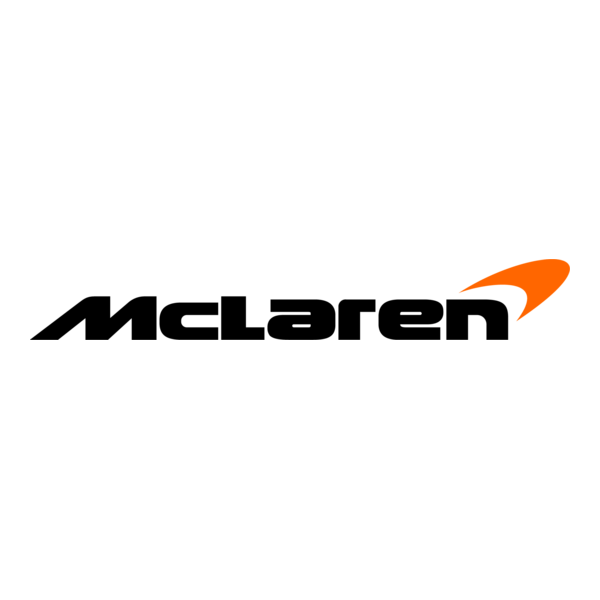

McLaren is one of the most storied and successful teams in Formula 1 history, built on a foundation of racing innovation and an unyielding competitive spirit. Founded by Bruce McLaren in 1963, the team first competed in the 1966 Formula 1 World Championship and has since become the second-oldest and second-most successful team in the sport. Headquartered in Woking, England, McLaren has secured numerous victories, including 12 Drivers' Championships and 10 Constructors' Championships, with legendary drivers like Ayrton Senna, Mika Häkkinen, and Lewis Hamilton. Following a recent resurgence, the team won the Constructors' World Championship in both 2024 and 2025.
Bruce McLaren was the founder of McLaren, establishing Bruce McLaren Motor Racing in 1963. A New Zealander, he was a talented engineer and racer who created the team to compete in the Australasian Tasman Series, but it grew to become a successful Formula 1 constructor and a manufacturer of high-performance road car
McLaren is primarily owned by Bahrain's sovereign wealth fund, Mumtalakat, which is the majority shareholder. In 2025, CYVN Holdings, an investment firm from Abu Dhabi, became the sole owner of McLaren Automotive, with Mumtalakat remaining the majority shareholder in McLaren Racing
The CEO of McLaren Racing is Zak Brown, while the CEO of McLaren Automotive is Nick Collins. Brown is widely recognized for his leadership of the racing team, which has seen recent success, while Collins leads the sports car manufacturing compan
BRAZILIAN GP
MEXICAN GP
DUTCH GP
BELGIAN GP
BRITISH GP
AUSTRIAN GP
SPANISH GP.